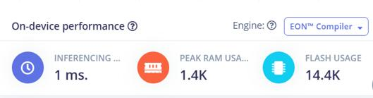
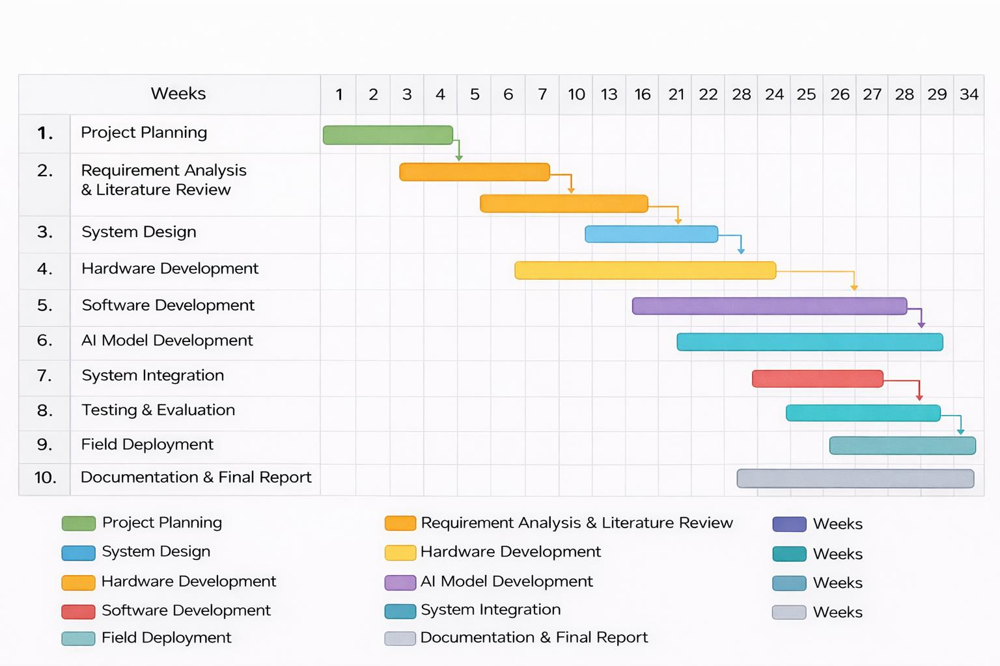
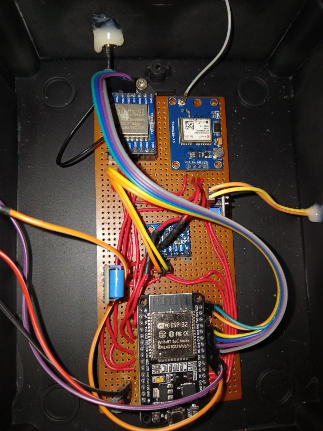
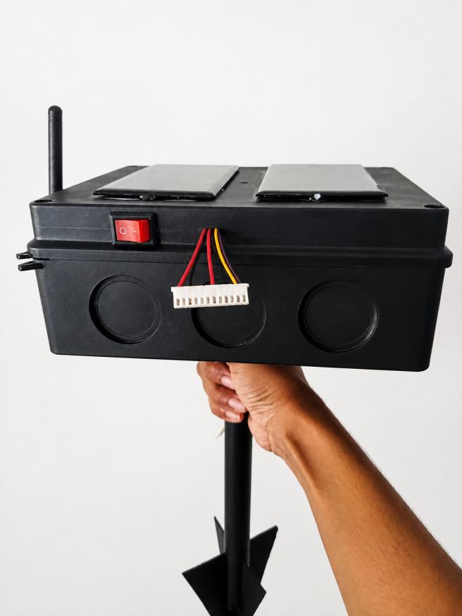
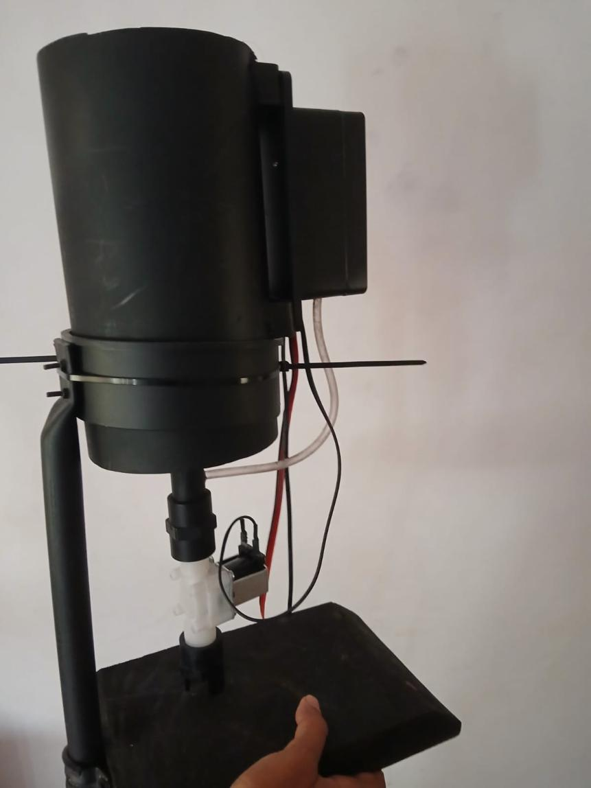
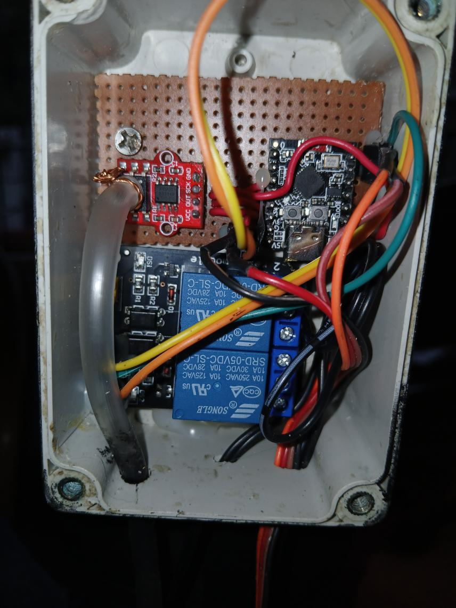
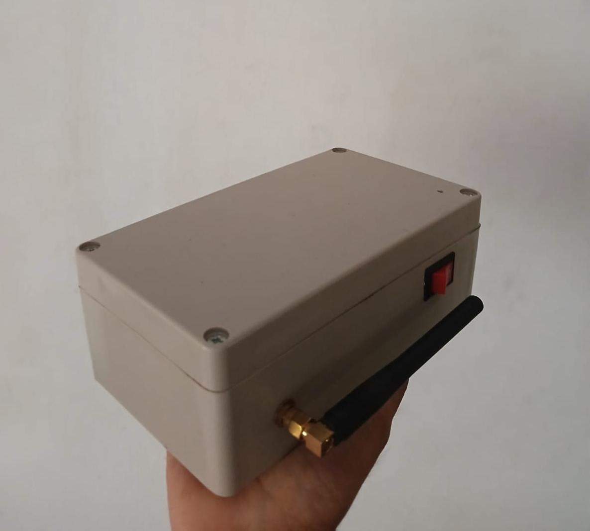
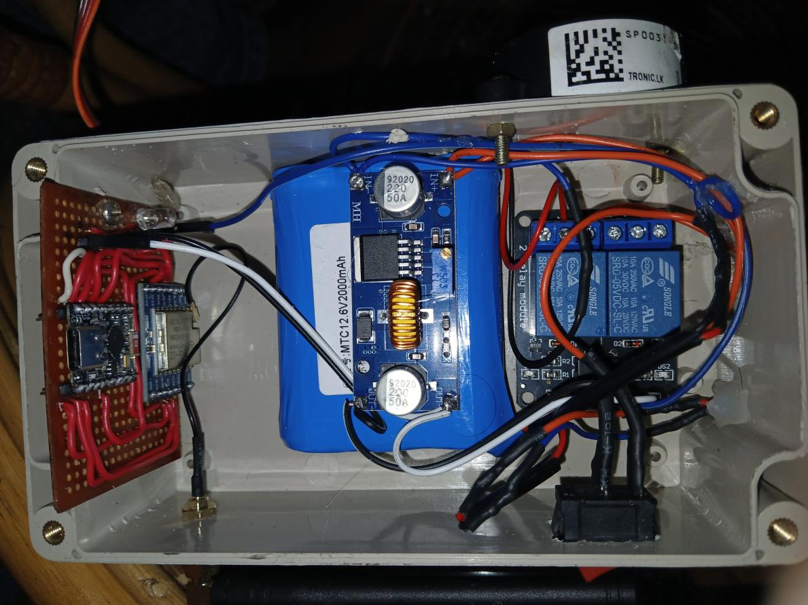
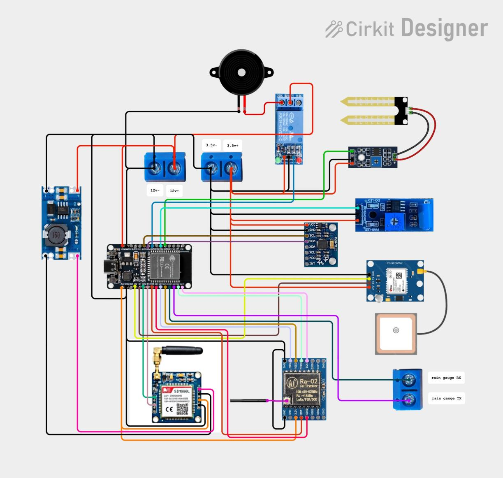
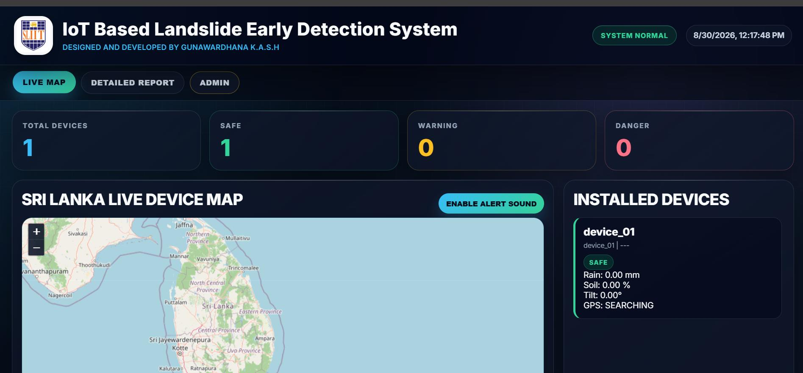

Model evaluation + prototype evidence
Results, implementation progress and project media
The project compares two machine-learning models, documents completed hardware modules and provides a live dashboard link for monitoring evidence.
AI model comparison
Random Forest was selected as the final model
Both Random Forest and k-Nearest Neighbors were implemented and tested in Edge Impulse.
| Criteria | Random Forest | k-NN |
|---|---|---|
| Model status | Implemented and tested | Implemented and tested |
| Accuracy | 89.15% | 87.6% |
| Area under ROC Curve | 0.99 | 0.98 |
| Weighted average precision | 0.95 | 0.88 |
| Weighted average recall | 0.94 | 0.88 |
| Weighted average F1 | 0.94 | 0.88 |
| Danger class accuracy | 95.5% | 96.1% |
| Safe class accuracy | 86.6% | 81.8% |
| Warning class accuracy | 85.4% | 85.1% |
| Inferencing time | 1 ms | 2 ms |
| Peak RAM usage | 1.4K | 1.4K |
| Flash usage | 14.4K | 11.9K |
| Stability | High | Medium |
| Sensitivity to noisy data | Lower | Higher |
| Final selection | Selected model | Alternative model |

Model output
Three operational risk classes
The Edge Impulse results in the presentation use four input feature groups—rainfall, soil, vibration and tilt—to produce three output states:
✓
Safe
Normal condition classification.
!
Warning
Elevated risk requiring attention.
!
Danger
High-risk classification for urgent warning.
Implementation progress
Core sensing and integration objectives are marked completed
The presentation records completed work across dataset preparation, model training, sensors, LoRa integration and the monitoring GUI.
01
Data collection & preparation
Data collected from NBRO, Meteorology Department and research papers; 900+ dataset prepared.
Completed02
Model training
Dataset trained using the Edge Impulse platform.
Completed03
Sensor implementation
Soil moisture, vibration, tilt, GPS and rain gauge development are listed as completed.
Completed04
LoRa integration
Long-range communication integration is marked complete.
Completed05
Monitoring GUI
GUI development to illustrate sensor readings is marked complete.
Completed
Evidence of completion
Physical modules documented in the presentation






Circuit evidence
Hardware design moved from circuit planning to a working prototype
The presentation includes both a circuit diagram and a wired prototype image for the main unit. Together, they document the transition from circuit design to physical implementation.

Project video
A dedicated video section is ready
Upload the final project demonstration video from the secure Admin area. The newest MP4/WebM upload will appear here automatically.
Checking for project video…

Monitoring dashboard
Existing live system evidence
The presentation provides an existing project monitoring link showing device status, Sri Lanka device mapping and alert categories.
Open live dashboard ↗